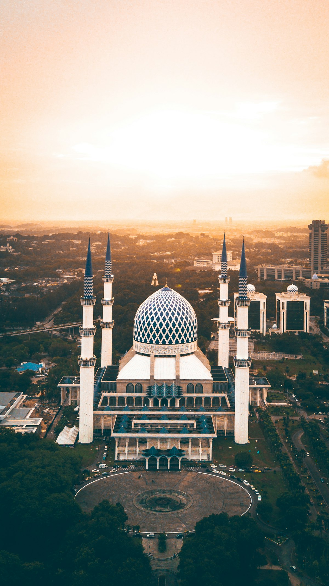

Akses Jalan Tol Lingkar Timur & Jembatan Bentang 120m
Pembangunan jalan tol rigid pavement 4 lajur sepanjang 6,8 km serta ereksi jembatan rangka baja bentang 120 meter di atas sungai dengan tanah lunak.
 Pabrik & Gudang
Selesai BAST II
Pabrik & Gudang
Selesai BAST II
Kompleks Pergudangan Logistik Modern Cikarang Delta
Pembangunan fasilitas hub logistik seluas 42.000 m² dengan lantai beton superflat FM2 toleransi forklift VNA dan 36 unit loading dock hidrolik.
 Gedung Komersial
On-Going (72%)
Gedung Komersial
On-Going (72%)
Menara Perkantoran Graha Bumi Sudirman (28 Lantai)
Pekerjaan struktur beton bertulang mutu fc' 45 MPa, 3 lantai basemen dengan diaphragm wall, dan instalasi double glazed low-E curtain wall.
 Pabrik & Gudang
Selesai BAST I
Pabrik & Gudang
Selesai BAST I
Ekspansi Fasilitas Manufaktur Otomotif & Assembly
Pekerjaan rangka baja WF bentang bebas 48 meter, crane runway 20 Ton, lantai heavy duty epoxy mortar tahan oli kimia, dan substation listrik 3.500 kVA.
 MEP & Utilitas
Selesai BAST I
MEP & Utilitas
Selesai BAST I
Gardu Distribusi TM 20kV & Jaringan Utilitas Air Bersih
Penyediaan switchgear tegangan menengah, pemipaan HDPE distribusi air bersih 12 km, dan stasiun pompa transfer kapasitas 150 liter/detik.

Jalan & Tol On-Going (58%)Flyover Simpang Susun Akses Pelabuhan Tanjung Priok
Pekerjaan erection balok PC-I girder melintasi jalur rel aktif tanpa menghentikan lalu lintas kontainer pelabuhan menggunakan launcher gantry gantung.
Tidak Ada Proyek yang Cocok
Coba sesuaikan kombinasi sektor, tahun, atau status filter di atas.